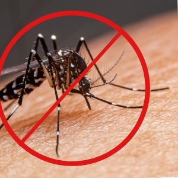

Bem-vindo ao site educacional sobre Dengue
Aqui você encontrará informações sobre a doença, sintomas, tratamentos e casos no Brasil.
A dengue é uma doença viral transmitida por mosquitos, mais comumente pelo mosquito Aedes aegypti. É predominante em áreas tropicais e subtropicais do mundo, especialmente em áreas urbanas e semi-urbanas.
Os sintomas da dengue começam de quatro a seis dias após a infecção e duram até dez dias. Eles podem incluir:
- Febre alta
- Dor de cabeça
- Dor atrás dos olhos
- Dores nas articulações e músculos
- Erupção cutânea
- Náusea e vômito
Em casos graves, a dengue pode se transformar em dengue hemorrágica, que causa sangramento, coágulos sanguíneos e pode levar ao choque, falência de órgãos e morte.
A prevenção da dengue é focada no controle do mosquito e na prevenção de picadas de mosquito. Não existe tratamento específico para a dengue, mas o cuidado médico adequado pode ajudar a controlar os sintomas.
Lembre-se, se você suspeitar que tem dengue, procure atendimento médico imediatamente.